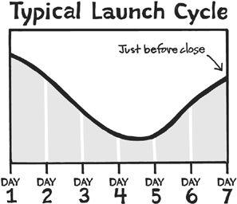

“Before beginning, prepare carefully.”
—MARCUS TULLIUS CICERO
Let’s take a trip to Hollywood, by way of our local cinema or movie theater. Every year, a number of blockbuster films come out that cost a huge amount of money to produce, often $100 million or more. Studio executives know they have only a limited window to ensure a big hit. If the opening weekend isn’t huge, they may still have a good movie, but not the blockbuster they need to recoup their high costs.
The executives also know that although some people don’t decide which movie they want to see until they get to the theater, lots of other people go to see a particular movie. If they’ve been hearing about it in advance, building up their anticipation and getting excited, they’re all the more eager to see the movie—and tell their friends about it too.
This is why Hollywood begins the “pre-launch” for a big film many months in advance, often a whole season or even an entire year in advance for the right film. During this time they are showing previews at the beginning of other movies, building buzz through an Internet campaign, and working the PR angles far in advance of the movie actually coming out.
The pre-launch campaign is a success when people eagerly await the film, complaining about how long it takes to arrive, until the day—“finally”—it’s ready to be screened for the public. Then, the studio hopes, hundreds of thousands of filmgoers will pay their money and stream into the theater. Without an active pre-launch campaign, the movie may be great but the odds of commercial success are far lower.
The same principle holds true for microbusinesses. Whether a Hollywood movie or the debut of your new sock-knitting class, launches are built primarily through a series of regular communications with prospects and existing customers. Just like the movie executives who release trailers over time (first a short one, then a longer one) and the press events that Apple built up over time with Steve Jobs at the helm (building anticipation for future products to a fever pitch), small businesses can reproduce this cycle in their own way.*
Karol Gajda and Adam Baker, two friends with separate businesses in different parts of the country, decided to team up for a big project. Karol had completed an engineering degree from the University of Michigan, but never actually worked as an engineer. He first had the idea from reading a classic ninety-year-old marketing book called Scientific Advertising by Claude Hopkins. In the book, Hopkins discussed “fire sales”—the old-school, “everything must go” tactic used by furniture stores for decades. Karol didn’t have a furniture store, but he wondered … What if we put together a modern-day fire sale, with an emphasis on giving away a ton of value for a low price, but only for a limited time?
Karol and Adam were both in the information publishing business, and they quickly went to work, approaching other colleagues to participate. The pitch was intriguing: Contribute your products to the overall mix to be sold as a group for a low price and during a limited time. Oh, and if you help promote the offer to your own audience of customers and followers, you’ll earn an 80 percent commission on everything you sell. It was a good pitch, and Karol and Adam had spent plenty of time building relationships and developing a strong reputation for their work. Out of twenty-five requests, twenty-three people said yes.
Packaging everything together, they ended up with a monster package valued at a retail price of $1,054. They would sell the package for $97, less than 10 percent of the overall value and a price to which they expected customers would respond well. The “hook” came from the fire-sale idea: The offer would be available for only seventy-two hours—no packages would ever be sold again after the limited time period.
The big day came, and they put the offer online. For ten minutes nothing happened. Karol sat looking in anticipation at the stats in Austin while Adam was biting his nails in Indianapolis. Was something wrong? Fortunately not … It turned out they were just ten minutes early. All of a sudden, a trickle of visitors became a stream, then a flood, as more and more people heard about the offer and came by to purchase. Wham! The server was hit hard, and Karol’s Gmail account reported “Notification of payment received” over and over.
The flood continued for the rest of the day, slowed down a bit on the second day, and then picked back up at the end of the third and final day. When the smoke cleared, Karol and Adam added up the results. Total sales: $185,755 in three sleep-deprived days. Such was the power of a well-crafted product launch.
Because a planned launch campaign can provide far better results than simply putting something out there and saying, “Hey, here you go,” you’ll want to think carefully about how to structure it. The campaign usually unfolds in a series of messages you send to your audience, and you should keep the Hollywood analogy in mind: The worst thing you could do for a launch is to open your movie without letting anyone know. A much better thing is to tell a story. The story unfolds like this …
An early look at the future. In the first mention of your upcoming launch, you don’t want to give all the details away; it’s usually better to start with a simple heads-up. You want to say something like this: “Hey, I’m working on something interesting. It’s going to be a big deal when it’s finished, but for now I’m just letting you know that it’s coming down the line.” The goal is to slowly build anticipation for what eventually will be available for purchase.
Why this project will matter. The most important early message about the launch (and one that has to be reinforced continually) is why your prospects and customers should care. In the blitz of communication that we all process every day, why should anyone stop and pay attention to this project? The message you want to communicate is: “This is why this project will be a game changer, here’s how people will benefit, and here’s why you should care.”
The plan for the big debut. The previous two messages, as well as any others, have been about the project itself, not the actual launch. Here’s where you roll out some of the details for the launch itself. When will it be? How will it work? Will there be some kind of bonus for early buyers? Most important, what do people need to know at this time?
Whoa, we’re almost ready! This communication happens right before the launch, sometimes as late as the day before. The message is: “This is the calm before the storm. We’re coming down to the wire and are really excited about this.” Any last-minute reminders or launch details are included here, and the goal is to convert anticipation into an actual decision. (You want prospects to decide in advance that they want what you’re putting together.)
OMG, HERE IT IS! The message is: “It’s finally here, everyone has been waiting, and now we’re ready to go.” This communication tends to be shorter than the others because if you’ve done your job right, many buyers are already prepared to purchase. Here’s where you open the gates to the hordes … or at least that’s what you hope will happen. In this message you send them a link (or give them another way to purchase) and encourage them to take action.
INTERLUDE
Let’s pause here for a moment. What happens immediately after this point is just as important as what has happened already. A good marketer doesn’t rest on her laurels after a launch, because she knows she can probably increase the results significantly with little effort. A launch often results in a response cycle like this:

If the launch is a week long, you’ll tend to see a strong response on the first and second days, followed by a significant downturn and then a big uptick right before the close. This further illustrates why you need a launch cycle: If you have no closing, you won’t see the uptick! If you just launch and move on, you’ll have no opportunity for growth. Now back to the story …
Here’s how it’s going. Something always goes wrong in every launch. Here’s a chance to address or correct it, along with updating everyone on how things are going. During this time, it’s also important to share stories of happy customers who have purchased already. The message is, “Look at all these people who are already benefiting from our product.”
The clock’s a-ticking. Right before the offer goes off the market, or before you remove the bonuses, or before the price goes up, here’s where you make one final push. The message is, “It’s almost over. Here’s your last chance before you lose out.”
“I’d like to thank my mother for believing in me.” Any good launch has a closing period in which you bring the roller coaster to a stop, even if the offer will still be available in a different form. The message is, “It’s all over now. Thanks, everyone. Here’s what’s coming next.”
Disaster and Recovery:
“HORDE OF NEW CUSTOMERS” EDITION
Like the problem of having too much money, having too many customers is usually a good problem to have—but it can still be a tough scramble if the customers all arrive at once and a key supplier isn’t ready. Here’s what David Wachtendonk, the founder of a party planning business in Chicago, learned when he received two thousand more customers than expected for a promotion.
In June 2010 our company participated in a Groupon. We did some research, and it appeared this could be a good avenue for our company to get some exposure for a new concept we wanted to launch in Chicago. After some discussion with the Groupon guys, we agreed it would be a match made in heaven. Our last remaining task was to find a venue that could support the deal. After some initial opportunities fell through, we found a new restaurant that agreed to work with us.
The day the deal went live, we had no idea what was about to happen. Our Groupon rep estimated we would sell about 1,000 to 1,500 units … but 3,300 units later, the day ended. We thought we had systems in place to deal with growth, but unfortunately we became overwhelmed. The phone was off the hook and emails poured in, which we fielded to the best of our ability. Most of the customers were fairly understanding as we were a small business, but not everyone was nice about it.
We found out after the deal had launched that the restaurant was in the middle of rebranding to a sports bar, which is not the ideal situation for a dinner theater. Their clientele changed, the atmosphere was evolving, and the owner of the business did his best to accommodate us. Unfortunately, your best isn’t always good enough, and our new customers let us know it. We worked tirelessly with their team to get them up to speed on how to handle large groups and even provided our own on-site hostess and manager for the majority of the shows with the hopes of improving the experience. Due to things out of our control, the quality didn’t meet expectations at first—service became sloppy, and the overall experience was diluted. The first few shows were challenging, but over time the experience got better. Forty-seven shows later, we finally wrapped things up.
Our company had done its research and what we thought was adequate due diligence for the deal, but our efforts fell short. We should have been more proactive and done a better job communicating expectations to our customers. Thankfully, our team made it through the experience and can live to tell the story. The question people ask me all the time is, “Would you do another Groupon?” The honest answer is that I would. Along with the challenges the Groupon presented, it provided exposure that traditional marketing never would have achieved.
As with everything else in life, it’s important to keep your word with launches. If your offer ended at a set time and you had a big response, you’ll invariably be contacted with requests for exceptions after it’s over. It’s tempting to take more money, but if you said it would end at a set time, you need to stick to your decision. In the long run, this works in your favor, because people will realize that you mean what you say. Karol and Adam received numerous requests for their bundled package after the seventy-two-hour period had ended, but they politely declined each one.
One more thing: If you admit to a flaw, weakness, or limitation in your product, this will probably help instead of harm you. This is because when we are evaluating a purchasing decision, we like to consider both the strengths and the weaknesses. If a product developer personally tells us it’s not perfect—“and here’s why”—we tend to trust him or her more.
You can see this style of messaging in President Obama’s 2012 reelection campaign. An early ad in favor of reelection contained the following statement from a supporter: “I don’t agree with Obama on everything, but I respect and trust him.” Meanwhile, an ad that launched the same week against reelection contained the following statement from someone who was opposed: “I like Obama, but I just don’t understand his policies.”
These are essentially the same statements, flipped around to place the emphasis on what each side wants voters to believe. Each message contains both an admission of uncertainty and an argument, thus making both pitches a good fit for independent voters who haven’t made up their minds yet.†
In all the messages you send (whether delivered via email or in another way), you’ll want to be mindful of several qualities. The first and most important is what we’ve mentioned already: the need to tell a good story. On its own, however, a good story isn’t always enough. You also need to think about “relatability” and timeliness. Relatability, which may or may not be a real word, refers to the need to ensure that the people who hear about the launch can relate to it. Do they see themselves in the characters in your story, and can they clearly understand how it will help them? Do they get it?
The final factor is timeliness, and it can be the critical difference between good results (“We did OK”) and great results (“We killed it!”). Without timeliness, customers may evaluate the offer and agree that it’s interesting, but fail to take action because there is no need for them to do so right away. You don’t want to pressure people into buying if they’re not ready, but you do want to instill a sense of urgency. That’s why a good launch always factors in a concern for timeliness.
The goal of a good launch is not just to convert as many prospects as possible; it’s also to preserve your relationship with other prospects and increase your influence. The reason this is important is because you don’t want to hammer people too hard; it’s better to build relationships over time.
Some people will always complain whenever you sell anything at any price. There’s nothing you can do about that attitude, so just accept it and don’t cater to those people. But you do want to pay attention to your broader base. What are they saying about you? How do they perceive the value of your offer and the style of your messaging? A good launch should increase sales and influence at the same time. If you’re getting positive feedback from people who don’t buy your product but want to support you in other ways, you’re on the right track.
Storytelling and the Empire Building Kit Launch
It was my most important launch to date: an online business course called the Empire Building Kit that eventually formed the basis for this book. For months I conducted interviews and research, capturing lessons from unconventional entrepreneurs and extracting the secrets of their success. As I prepared to make it available, though, I felt stuck—something wasn’t coming together, and I kept procrastinating on the launch date.
While planning a trip to Europe and West Africa, I had a flight booked that eventually would take me to Chicago but no onward ticket to my home in Portland. On a whim I checked the Amtrak schedule, thinking there was no way I’d want to take a train halfway across the country but I might as well take a look. To my surprise, the name of the Amtrak train from Chicago to Portland was the Empire Builder. Hmmm. I began to get an idea, but initially thought it was too crazy to implement. That same evening, the doorbell rang and the UPS guy dropped off a package. When I opened the box, I discovered a free messenger bag sent by some new friends at Tom Bihn’s company (profiled in Chapter 13). The name of the bag was … Empire Builder.
I’m not sure if God, the universe, or Tom Bihn’s company was sending me the message, but I decided to follow the idea where it led. I made plans to go to West Africa then fly home via Chicago and launch the Empire Building Kit on a single day, live from the Empire Builder train. Oh, and it also happened to be my birthday—so I made that part of the story as well.
I asked my friend J. D. Roth to come along with me, so he and I met up in Chicago and prepared for the journey. Upon embarking on the train, we set up a “blogger’s lounge” in the Amtrak viewing car complete with various Apple products—amusing the other passengers, many of whom were elderly sightseers. In the weeks before the big day, I had been telling my community about the plan with a mixture of excitement and dread; I was excited to launch the new course but scared that I wouldn’t be able to finish it in time. With so much riding on the story, there was no flexibility on the date and no backup plan if things didn’t work out.
Thankfully, everything worked as it should. I finished the final copyedits on my Lufthansa flight to Chicago. Two days later, we launched the Empire Building Kit to hundreds of eager buyers, many of whom had been waiting for it since the pre-launch campaign. The launch cleared over $100,000 in sales before I turned it off exactly twenty-four hours later as our train rolled through Washington State and down into Oregon. The message had a good story and built-in timeliness: Once we hit Portland, the deal was over.
My favorite part was receiving emails from people who said they weren’t interested in the course but had been enjoying the story of the train ride. I don’t always get it right, but this time everything fell into place.
After finishing a university course, Andreas Kambanis struggled for six months, not wanting to get a real job and trying to build something for himself. The goal was to develop an iPhone app and online guide to London cycling routes, but the initial setbacks were significant. Among other things, Andreas used the name London Cyclist before realizing that there already was a publication with that name, triggering an angry letter and the threat of a lawsuit. Meanwhile, all of his friends had gone on to work for companies, so they had money to go out at night while Andreas stayed home.
Andreas stuck it out, planning for his first launch with a partner right before leaving on a personal trip to Brazil. A few weeks before departure, the partner dropped out. Andreas cut back on the expected deliverables but decided to keep going with both the launch and the trip.
The big day came, and he launched the app from the Heathrow airport departure lounge literally thirty minutes before boarding the flight. Settling into economy class for the eleven-hour flight, he had plenty of time to think about his new business, but in the days before in-flight Internet was common, there wasn’t anything he could do about it. As he explained later, going offline right after releasing the app probably wasn’t the best decision, but without much of an audience, he didn’t expect any real results to appear right away. After finally touching down in São Paulo, Andreas couldn’t resist activating the roaming feature of his iPhone for a quick check.
Bleary-eyed and sitting in a cramped window seat, he pulled up the numbers and couldn’t believe what he saw—a pile of orders was flooding in, just as Karol and Adam had experienced earlier. It wasn’t a fortune, but in the time he had been flying across the Atlantic, the launch had paid for his plane ticket and the first week of lodging. Andreas continued on to a connecting flight to Rio, abandoning all hope of not using the roaming option on his phone, and kept watching the sales come through.
I prefer to spend my launches at home with sixteen ounces of coffee in hand, dealing with the inevitable technical glitch while communicating with partners and buyers. But in this case, having the forced deadline of the upcoming flight—and then getting on the plane in Heathrow, ready or not—served as a powerful motivation for Andreas. “It’s hard to put into words why the physical deadline was such an important part of getting the project done,” he told me. “I think it was so motivational because it seemed impossible to achieve, and it made me kill everything that didn’t add to the project being finished.”‡
A good launch strategy can help almost any business, online or offline. Let’s take a look at how an independent publishing company used the same tactics that worked for Karol and Adam, but for a launch that was completely offline and local. Anastasia Valentine publishes children’s books and used to work with “big companies who had gigantic marketing budgets.” Naturally, she didn’t have access to the same kind of resources for her own launch, but she knew enough to create anticipation over time for a specific event.
The first part was to start with the ask—to ask everyone she knew for help. “We weren’t sure how to filter our requests,” Anastasia said, “so instead of filtering, we just asked everyone for everything. We asked for newspaper coverage, TV appearances, endorsements, donations for a big party, and anything else we could think of.”
The requests paid off when she got a positive response to almost everything. When the big day arrived, the line went out the door, and Anastasia had made sure to create a good experience for the attendees. Since adults who buy children’s books usually arrive with kids in tow, she added coloring spaces and a homemade pin-the-tooth-on-the-crocodile contest. Even though the launch was for an offline event, Web traffic increased by 267 percent and the mailing list doubled. Learning to ask was also instructive. “People we didn’t think would have the slightest interest showed up … with friends!” she said. “Meanwhile, people who we thought were totally interested never even responded. The lesson was that you shouldn’t assume someone isn’t interested or won’t attend or won’t buy.”
If you’re just getting started with your own launch planning, check out the Thirty-Nine-Step Product Launch Checklist below. This checklist has two uses: as a template for a new business planning its first launch and as an idea generator for an existing business.
Thirty-Nine-Step Product Launch Checklist
Note: Every product launch is different. Use these steps as a guideline to your own. Often by adding one or two steps you would otherwise leave out, you’ll get a significant increase in sales.
THE BIG PICTURE
1. Ensure that your product or service has a clear value proposition.* What do customers receive when exchanging money for your offer?
2. Decide on bonuses, incentives, or rewards for early buyers. How will they be rewarded for taking action?
3. Have you made the launch fun somehow? (Remember to think about non-buyers as well as buyers. If people don’t want to buy, will they still enjoy hearing or reading about the launch?)
4. If your launch is online, have you recorded a video or audio message to complement the written copy?
5. Have you built anticipation into the launch? Are prospects excited?
6. Have you built urgency—not the false kind but a real reason for timeliness—into the launch?
7. Publish the time and date of the launch in advance (if it’s online, some people will be camped out on the site an hour before, hitting the refresh button every few minutes).
8. Proofread all sales materials multiple times … and get someone else to review them as well.
9. Check all Web links in your shopping cart or payment processor, and then double-check them from a different computer with a different browser.
*This is superimportant! USP means “unique selling proposition” and refers to the one thing that distinguishes your offering from all others. Why should people pay attention to what you are selling? You must answer this question well.
NEXT STEPS
10. If this is an online product, is it properly set up in your shopping cart or with PayPal?
11. Test every step of the order process repeatedly. Whenever you change any variable (price, order components, text, etc.), test it again.
12. Have you registered all the domains associated with your product? (Domains are cheap; you might as well get the .com, .net, .org, and any very similar name if available.)
13. Are all files uploaded and in the right place?
14. Review the order page carefully for errors or easy-to-make improvements. Print it out and share it with several friends for review, including a couple of people who don’t know anything about your business.
15. Read important communications (launch message, order page, sales page) out loud. You’ll probably notice a mistake or a poorly phrased sentence you missed while reading it in your head.
16. Have you or your designer created any custom graphics for the offer, including any needed ads for affiliates or partners?
17. Set a clear monetary goal for the launch. How many sales do you want to see, and how much net income? (In other words, what will success look like?)
18. Advise the merchant account or bank of incoming funds.*
19. Create a backup plan for incoming funds if necessary (get an additional merchant account, plan to switch all payments to PayPal, etc.).
20. Can you add another payment option for anyone who has trouble placing an order?
21. For a high-priced product, can you offer a payment plan? (Note: It’s common to offer a slight discount for customers paying in full. This serves as an incentive for customers who prefer to pay all at once while providing an alternative for those who need to pay over time.)
*Merchant accounts are paranoid about large sums of money arriving in a short period of time. If you don’t give them a heads-up, you might run into problems.
THE NIGHT BEFORE
22. Clear as much email as possible in addition to any other online tasks so you can focus on the big day tomorrow.
23. Write a strong launch message to your lists of readers, customers, and/or affiliates.
24. Prepare a blog post and any needed social media posts (if applicable).
25. Set two alarm clocks to ensure that you’re wide awake and available at least one hour before the scheduled launch.
THE BIG MORNING
26. Schedule your launch time to suit your audience, not you. All things being equal, it’s usually best to launch early in the morning, East Coast time.
27. Soft launch at least ten minutes early to make sure everything is working. It’s better for you to find the problems than to have your customers find them!
28. Write the first three to five buyers to say thanks and ask, “Did everything go OK in the order process?” (Side benefit: These buyers are probably your biggest fans anyway, so they’ll appreciate the personal check-in.)
29. As long as it’s possible, send a quick personal note to every buyer in addition to the automated thank-you that goes out. (If it’s not possible every time, do it as often as you can.)
PROMOTION (CAN BE DONE ON THE DAY OF LAUNCH OR BEFORE)
30. Most important: Ask for help spreading the word. Many readers, prospects, and acquaintances will help by telling their friends and followers, but you have to ask them.
31. Write to affiliates with a reminder about the new offering.
32. Write to journalists or media contacts, if appropriate.
33. Post on Twitter, Facebook, LinkedIn, and any other social networks you already participate in. (It’s not usually a good idea to join a new network just to promote something.)
FOLLOW-UP (DO THIS IN ADVANCE)
34. Write the general thank-you message that all buyers will receive when purchasing.
35. If applicable, write the first message for your email follow-up series that buyers will receive.
36. Outline additional content for future communication and plan to schedule it after you recover from the launch.
GOING ABOVE AND BEYOND
37. How can you overdeliver and surprise your customers with this product? Can you include additional deliverables or some kind of unadvertised benefit?
38. Is there anything special you can do to thank your customers? (For a high-price launch, send postcards to each buyer; for something extra, call a few of your customers on the phone.)
THE SECOND TO LAST STEP
39. Don’t forget to celebrate. It’s a big day that you’ve worked up to for a long time. Go out to your favorite restaurant, have a glass of wine, buy something you’ve had your eye on for a while, or otherwise do something as a personal reward. You’ve earned it.
THE VERY LAST STEP
40. Start thinking about the next launch. What can you build on from this one? What did you learn that can help you create something even better next time?
Remember, many customers will support you for life as long as you keep providing them with great value. It’s much easier to sell to an existing customer than to a new one, so work hard to overdeliver and plan ahead for the next project. (For example, when promising a thirty-nine-step checklist, throw in an extra step.)
After the launch, you may be tempted to take a break, and you probably should do something to celebrate or rest. But make it a short break, because what happens next is important. During the launch process, a lot of people were paying attention to you. You’ve captured additional attention and trust in the form of new customers. Other prospects who considered the offer didn’t find it compelling at this time, but perhaps you can serve them with something else later.
Always return to the all-important value question: How can you help people more? After their big launch, Adam and Karol went back to their own businesses and active lives. Adam used part of his proceeds to buy an RV and tour the country with his family, and Karol began an unconventional pilgrimage to visit every roller coaster in America.
At the same time, they kept thinking ahead, planning another big project that would result in more sales, more customers, and more impact.
KEY POINTS
A good launch is like a Hollywood movie: You first hear about it far in advance, then you hear more about it before the debut, then you watch as crowds of people anxiously queue up for the opening.
*Any analysis of “launch marketing” should give credit to the classic book Influence by Robert Cialdini, who was one of the first to study how consumers decide to make purchasing decisions. Jeff Walker, an entrepreneur and educator, is also well known for his work on product launches.
†In addition to admitting a flaw or weakness, popular launch tactics include giving away a free copy of the product (turning it into a contest in which the aspiring winners compete for it publicly) and showing off a “sneak preview” of the product. Because launches are so important, I’ve included more tips and tactics in the free resources at 100startup.com.
‡An unexpected benefit of Andreas’s launch trip was meeting someone in South America who would become his longtime girlfriend. Your results may vary!